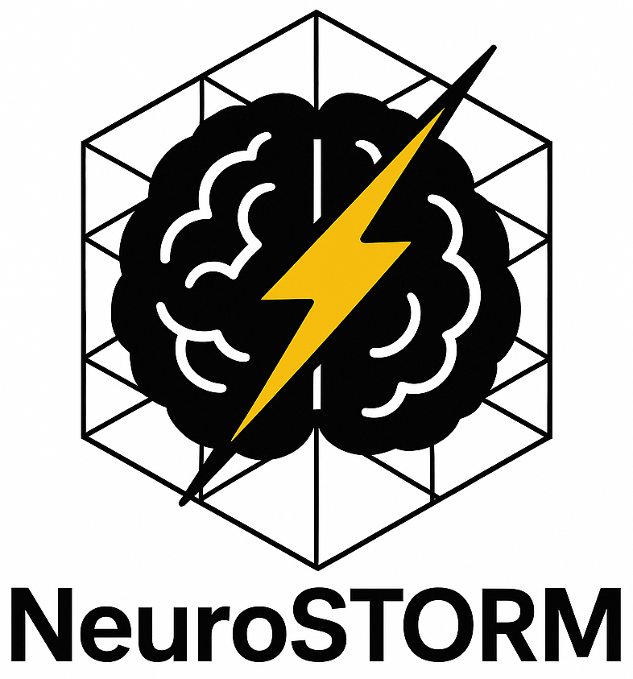
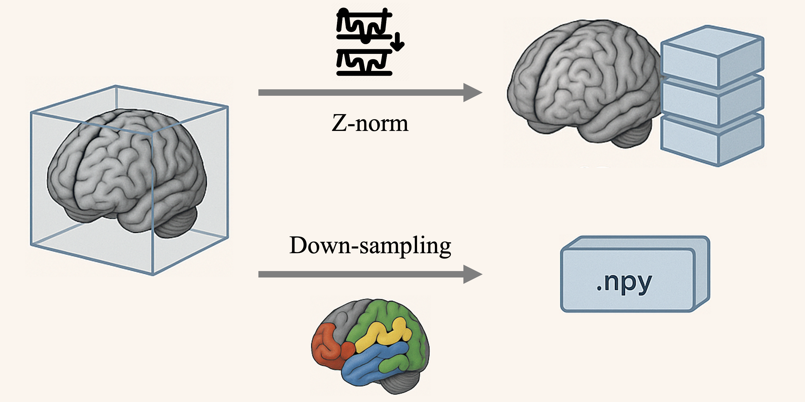
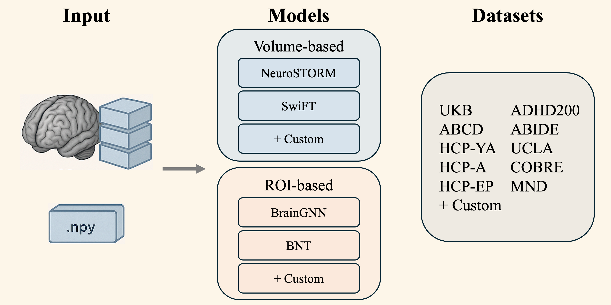
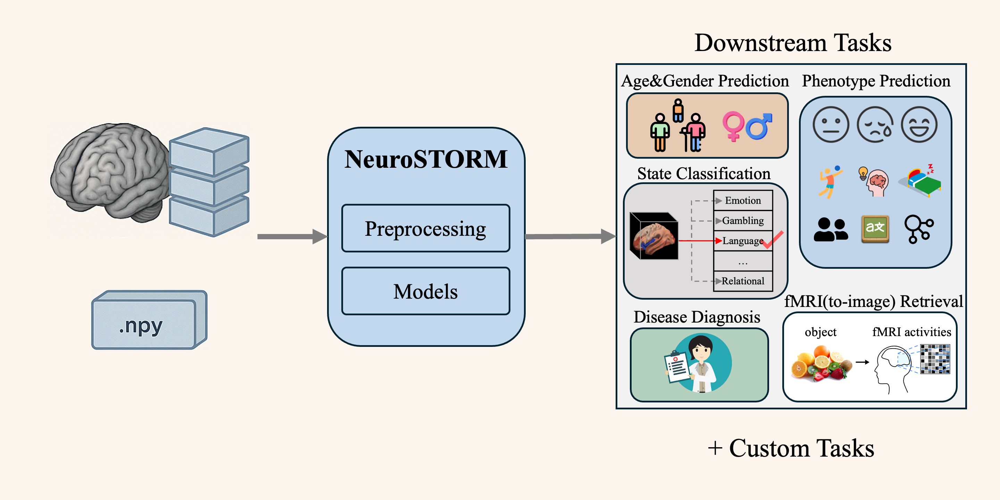

-
How to preprocess your own data with NeuroSTORM
-
Pre-processing:
Please make sure you have completed the primary preprocessing pipeline, such as
FSL,
fMRIPrep,
or the HCP pipeline,
and your data is aligned to MNI152 space.
You may also use our provided shell script for brain extraction:
brain_extraction.sh
(based on FSL BET, please install
FSL tool first).
After running, brain mask files in
.nii.gzformat will be generated in the output directory. -
Prepare 4D input:
Use preprocessing_volume.py
to preprocess your data for model input. This tool supports bulk dataset processing, including background removal, resampling, Z-normalization, and saving frames as
.ptfiles. If CPU is limited, preprocess in advance; if disk speed is the bottleneck, online preprocessing during training is an option. - Prepare 2D input: Use generate_roi_data_from_nii.py to convert 3D/4D data to 2D ROI-based data using available brain atlases. Multiple datasets and atlases are supported.
-
Pre-processing:
Please make sure you have completed the primary preprocessing pipeline, such as
FSL,
fMRIPrep,
or the HCP pipeline,
and your data is aligned to MNI152 space.
You may also use our provided shell script for brain extraction:
brain_extraction.sh
(based on FSL BET, please install
FSL tool first).
After running, brain mask files in
-
How to run existing methods on supported datasets
You can use our prepared scripts to quickly reproduce the experiments from the paper: scripts -
How to add new methods
- Add your model definition in models, and add the task head in models/heads.
- If additional inputs or outputs are needed, modify lightning_model.py.
-
How to adapt NeuroSTORM to new datasets
- Please preprocess fMRI sequences and align to MNI152 space using tools like fMRIPrep, HCP pipelines, or refer to UK Biobank MRI.
-
Add your dataset in
preprocessing_volume.py.
Modify:
- The naming convention for Volume data, in
determine_subject_namefunction - Choose the resize method: if similar to HCP-YA, use
select_middle_96, otherwise useresize_to_96
- The naming convention for Volume data, in
- Initialize your dataset in fmri_datasets.py, and define loader in data_module.py
-
How to add new tasks
-
Define the dataset label format in the
make_subject_dictfunction from data_module.py -
Set the task type by specifying
--downstream_taskin the script. - Choose a classification or regression head. For custom tasks, add a new head definition in models/heads
-
Define the dataset label format in the
- Related Links
 NeuroSTORM: A Deep Learning Toolkit for fMRI Analysis

NeuroSTORM provides preprocessing tools for both volume-based and ROI-based methods.

NeuroSTORM enables model training with customizable models and datasets.
